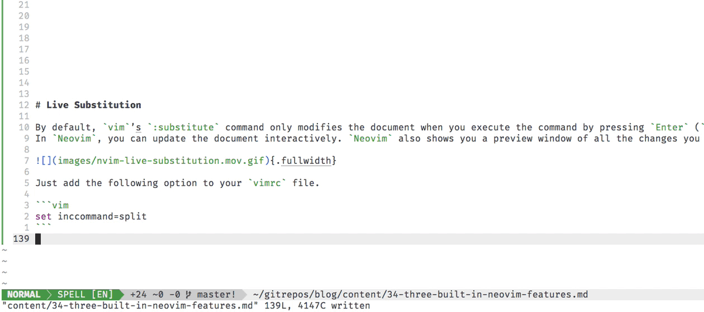
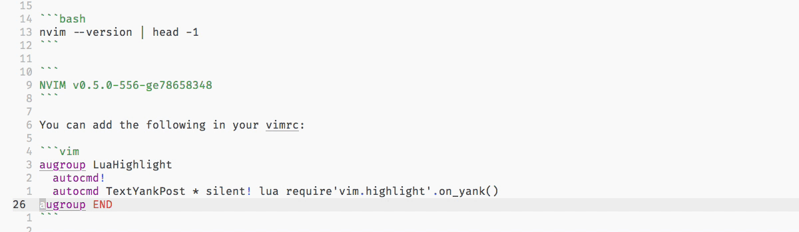
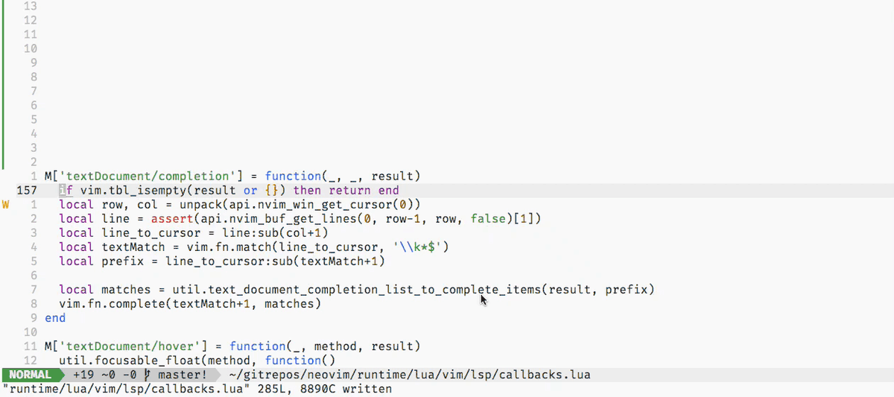

Three built-in neovim features
neovim, nvim, neovim vs vim, nightly, highlight, yank, text, live, substitution, built-in lsp, language server protocol
I want to share three built-in neovim features that I think are under the category of quality of life improvements
. They are live substitution, highlight yanked text, and the built-in language server protocol support.
Live Substitution
By default, vim’s :substitute command only modifies the document when you execute the command by pressing Enter (<CR>). In neovim, you can update the document interactively. neovim also shows you a preview window of all the changes you are going to make in the document.

Just add the following option to your vimrc file.
set inccommand=splitHighlight Yanked Text
With the latest version of neovim, you have the ability to highlight yanked text without using any plugins.

At the time of writing, you’ll need a v0.5.0 or the nightly1 release of neovim for this feature.
1 Precompiled binaries are available on the github releases page.
nvim --version | head -1NVIM v0.5.0-556-ge78658348You can add the following in your vimrc to enable this feature:
augroup LuaHighlight
autocmd!
autocmd TextYankPost * silent! lua require'vim.highlight'.on_yank()
augroup ENDLanguage Server Protocol
neovim has a built-in implementation of the Language Server Protocol client and default configurations for over 50 languages.

At the time of writing, you’ll need a v0.5.0 or the nightly release of neovim for this feature.
nvim --version | head -1NVIM v0.5.0-556-ge78658348While technically you can configure the LSP client straight from your vimrc file, it is easier to use configurations from the neovim/nvim-lsp repository that the neovim developers maintain.
In order to set this up you need to do 3 things:
Add the
neovim/nvim-lspplugin:Plug 'neovim/nvim-lsp'Run
:LspInstall {servername}::LspInstall sumneko_lua :LspInstall julials :LspInstall nimls :LspInstall rust_analyzer :LspInstall vimls :LspInstall pylsSet up configurations with options in your
vimrc:lua <<EOF local nvim_lsp = require'nvim_lsp' nvim_lsp.sumneko_lua.setup() nvim_lsp.julials.setup() nvim_lsp.nimls.setup() nvim_lsp.vimls.setup() nvim_lsp.pyls.setup{ settings = { pyls = { configurationSources = { pycodestyle, flake8 } } } } EOF
Reuse
Citation
@online{krishnamurthy2020,
author = {Krishnamurthy, Dheepak},
title = {Three Built-in `Neovim` Features},
date = {2020-06-27},
url = {https://kdheepak.com/blog/three-built-in-neovim-features/},
langid = {en}
}